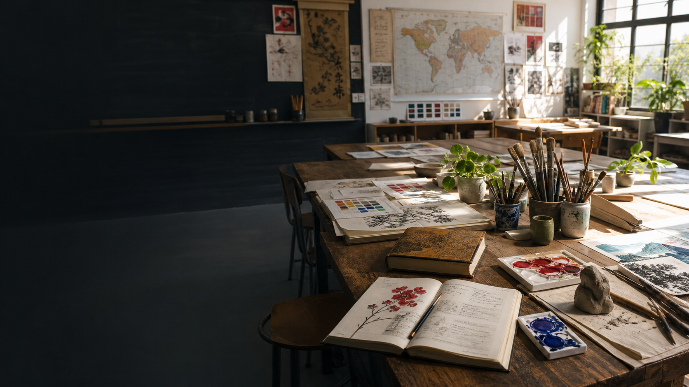

01
Artist KP3
Art transforms what I am carrying into something I can understand. It turns the unknown into a place where meaning can begin.

The official home of
Artist (KP3) • Educator • Author
I work where art, education, strategy, and emerging intelligence meet: helping people enter the unknown, remain open enough to learn, and carry their light forward.
The philosophy beneath the work
Enter the unknown with courage.
Remain open enough to learn.
Carry your light so others may find theirs.
One life. Three ways of seeing.
01
Art transforms what I am carrying into something I can understand. It turns the unknown into a place where meaning can begin.
02
Teaching asks us to see what is present, what is hidden, and what may still become possible when a learner is met with purpose and care.
03
Writing allows one lived lesson to travel farther, reaching educators, leaders, and creators who are shaping human potential in their own rooms.
Matthew Pham is a Canadian-Vietnamese artist, educator, and author whose educational journey spans Canada, England, Australia, and Vietnam. His experience reaches across public and international schools, from Nursery and Reception through Year 9, and across English, mathematics, science, STEM, basketball coaching, and Primary Art.
Since March 2021, he has served as an Art Teacher at ISHCMC Primary School in Ho Chi Minh City. He designs inquiry-rich learning and plans, curates, and installs end-of-year student Art Shows that make creative agency, growth, reflection, and student voice visible. His continuing development includes the 2025 EARCOS Teachers' Conference and school-based training in Basic First Aid, CPR, and anaphylaxis response, including EpiPen use.
Canada, England, Australia, and Vietnam
Experience across diverse public-school communities
Across subjects, settings, and stages of development
Art education, collaboration, and student exhibitions
Forthcoming nonfiction
Ancient Strategy for Teaching and Leading in an AI-Thriving World
This is a book about fighting the forces that limit growth: fear, confusion, disconnection, exhaustion, poor systems, self-doubt, and the misuse of powerful tools and intelligent systems.
Through the thirteen chapters of Sun Tzu's The Art of War, lived classroom stories, research, and practical reflection, the book asks one enduring question:
What does this moment require from the leader?
The classroom is not the battlefield.
The learner is never the enemy.
Thirteen strategic movements
Teaching in an AI-thriving world
The book does not treat AI as a saviour, a threat, or a shortcut. It examines what becomes possible when educators use intelligent systems with purpose, verification, privacy, judgment, and care.
Humans bring context, relationships, lived meaning, creativity, and accountability. AI systems may bring speed, breadth, comparison, simulation, and organized recall. The goal is not replacement. It is stronger learning through responsible collaboration.
From reflection to practice
A Field Journal for Turning Strategy into Practice
Separate what you observed from the story you added.
Identify what must be protected before choosing the move.
Invite the perspectives that may hold part of the picture.
Choose the smallest humane action that can improve the situation.
Return, reflect, and change the strategy when the ground changes.
The reusable companion gives these tools room to be returned to before, during, or after a moment. Complete only what helps you see more clearly. Blank space does not mean unfinished work.
If honest questions keep returning, they may reveal the path toward future work. Share the question, never a learner's identity or confidential information.
Notes from the work
Short reflections from the places where education, creativity, leadership, and intelligent systems meet.
Education
Artificial intelligence
Creative leadership
Artwork by KP3
The mask series explores what we carry, what we reveal, and what may be waiting beneath the stories we have learned to protect. Its matte black, titanium white, and antique gold are not simply colours. They are a journey through mystery, openness, pressure, resilience, and light.
The gallery will open with selected original works and the creative philosophy behind them.
Artwork inquiriesMedia & conversation
Matthew is available for thoughtful conversations about the work shaping classrooms, creative practice, and leadership in an AI-thriving world.
Professional inquiries
Books, artwork, collaborations, media, educational resources, and future creative projects.